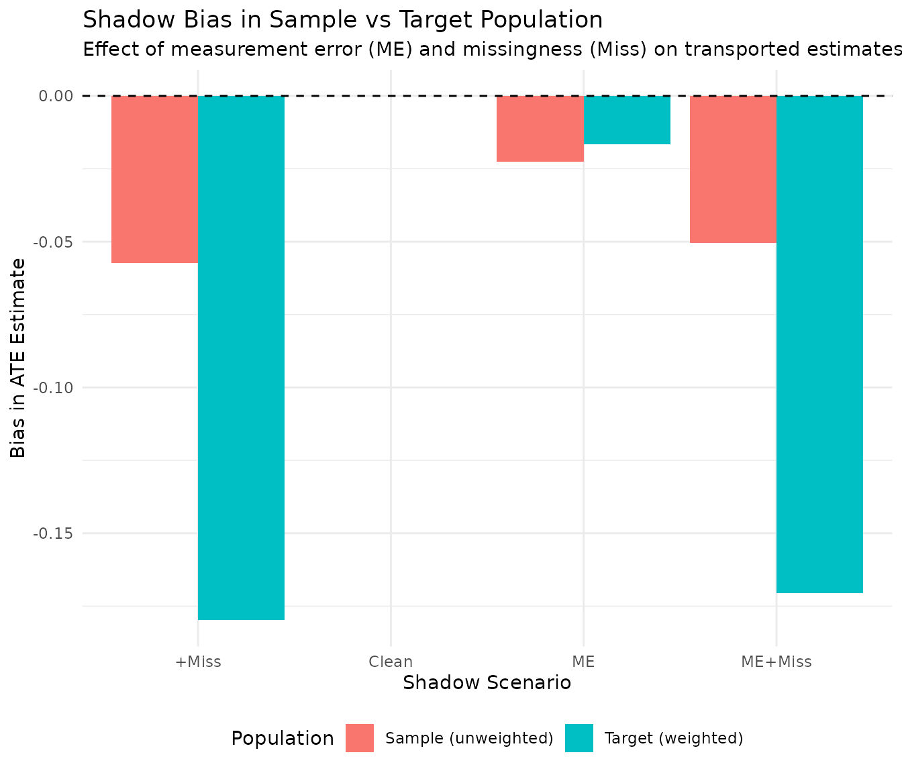
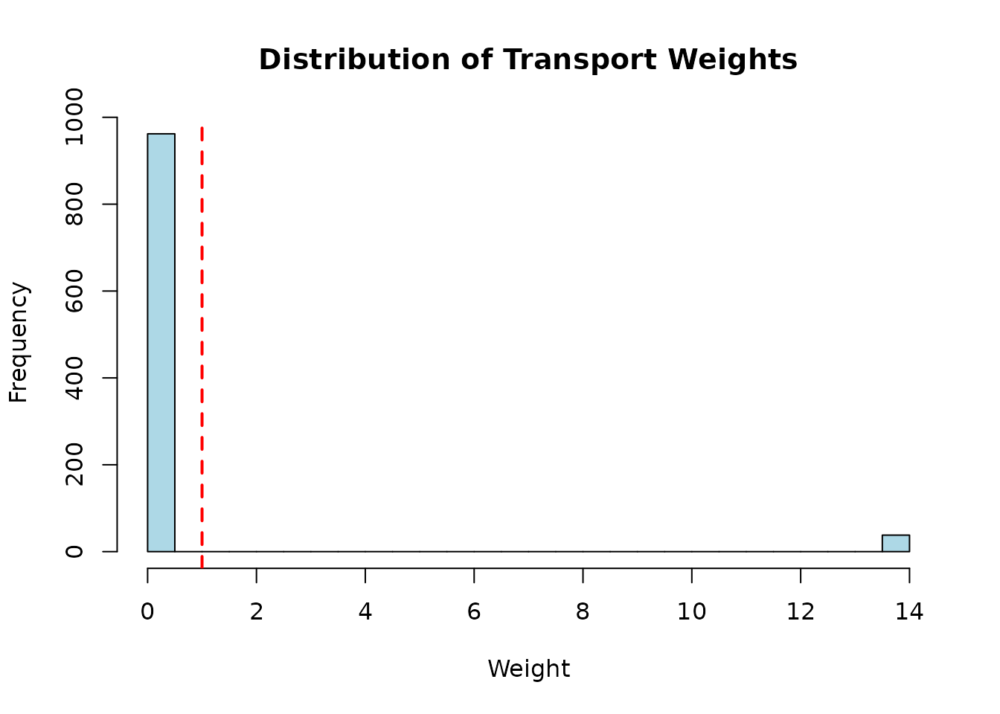

Transport Weights and Shadow Bias Analysis
Source:vignettes/transport-weights-shadows.Rmd
transport-weights-shadows.Rmd
# Load package using devtools if not installed
if (!requireNamespace("margot.sim", quietly = TRUE)) {
devtools::load_all()
} else {
library(margot.sim)
}
#> margot.sim 0.1.3
library(ggplot2)
library(dplyr)
#>
#> Attaching package: 'dplyr'
#> The following objects are masked from 'package:stats':
#>
#> filter, lag
#> The following objects are masked from 'package:base':
#>
#> intersect, setdiff, setequal, unionIntroduction
This vignette demonstrates how to use margot.sim for transportability analyses, where we want to:
- Transport results from a study sample to a target population
- Account for effect modification that differs between sample and population
- Evaluate how observational shadows (measurement error, missingness) affect transported estimates
The key insight is that bias from observational distortions can differ between the source and target populations, particularly when there’s effect heterogeneity.
Basic Transport Weights
The Transport Problem
Imagine we have: - A study sample where only 10% of participants are elderly (Z=1) - A target population where 50% are elderly - A treatment that works better in elderly patients (effect modification)
The average treatment effect (ATE) in our sample won’t match the ATE in the target population. Transport weights adjust for this difference.
Simple Example
# Generate data with transport weights
set.seed(2025)
data <- simulate_ate_data_with_weights(
n_sample = 2000,
n_population = 20000,
p_z_sample = 0.1, # 10% elderly in sample
p_z_population = 0.5, # 50% elderly in population
beta_a = 1, # base treatment effect
beta_z = 0, # being elderly doesn't affect baseline outcome
beta_az = 2, # treatment works 2 units better in elderly
noise_sd = 1
)
# Look at the sample data
head(data$sample_data)
#> y_sample a_sample z_sample weights
#> 1 2.3421668 1 0 0.5555556
#> 2 0.5844548 0 0 0.5555556
#> 3 -0.6628753 0 0 0.5555556
#> 4 1.5200187 0 0 0.5555556
#> 5 0.2956954 0 0 0.5555556
#> 6 -0.5125323 1 0 0.5555556Calculating Effects
Without weights, we estimate the sample ATE. With weights, we estimate the population ATE:
# Sample ATE (unweighted)
sample_ate <- with(data$sample_data,
mean(y_sample[a_sample == 1]) - mean(y_sample[a_sample == 0]))
# Population ATE (weighted)
pop_ate <- with(data$sample_data, {
w1 <- weights[a_sample == 1]
w0 <- weights[a_sample == 0]
weighted.mean(y_sample[a_sample == 1], w1) -
weighted.mean(y_sample[a_sample == 0], w0)
})
# True population ATE from large population data
true_pop_ate <- with(data$population_data,
mean(y_population[a_population == 1]) - mean(y_population[a_population == 0]))
cat("Sample ATE (unweighted):", round(sample_ate, 3), "\n")
#> Sample ATE (unweighted): 1.109
cat("Population ATE (weighted):", round(pop_ate, 3), "\n")
#> Population ATE (weighted): 2.006
cat("True Population ATE:", round(true_pop_ate, 3), "\n")
#> True Population ATE: 2.022
cat("Expected difference:", 2 * (0.5 - 0.1), "(due to effect modification)\n")
#> Expected difference: 0.8 (due to effect modification)Understanding the Weights
The weights adjust for the different distribution of the effect modifier:
# Examine weight values
weight_summary <- data$sample_data %>%
group_by(z_sample) %>%
summarise(
n = n(),
prop = n/nrow(data$sample_data),
weight = first(weights)
)
print(weight_summary)
#> # A tibble: 2 × 4
#> z_sample n prop weight
#> <int> <int> <dbl> <dbl>
#> 1 0 1784 0.892 0.556
#> 2 1 216 0.108 5
# Visualize weight distribution
ggplot(data$sample_data, aes(x = factor(z_sample), y = weights)) +
geom_boxplot() +
geom_point(alpha = 0.1) +
labs(x = "Effect Modifier Z", y = "Transport Weight",
title = "Transport Weights by Effect Modifier Status") +
theme_minimal()
Transport with Observational Shadows
Real-world data has measurement error, missing data, and other
distortions. The margot_transport_analysis() function shows
how these “shadows” affect transported estimates.
Example: Measurement Error
Let’s see how measurement error in the treatment variable affects our transported estimates:
# Analysis with measurement error
result <- margot_transport_analysis(
n_sample = 2000,
p_z_sample = 0.1,
p_z_population = 0.5,
beta_a = 1,
beta_z = 0,
beta_az = 2, # strong effect modification
apply_shadows = TRUE,
shadow_config = list(
measurement_error = TRUE,
missingness = FALSE
),
seed = 2025
)
#> Warning in compute_causal_effects(extracted, exposure = "a", outcome = "y", :
#> Non-binary treatment detected. Dichotomizing at 0.5 for effect estimation.
#> Warning in compute_causal_effects(extracted, exposure = "a", outcome = "y", :
#> Non-binary treatment detected. Dichotomizing at 0.5 for effect estimation.
# Compare bias in sample vs population
print(result$bias_comparison)
#> Population True_ATE Observed_ATE Bias Relative_Bias
#> 1 Sample (unweighted) 1.156860 1.151296 -0.005564697 -0.4810172
#> 2 Target (weighted) 2.009835 1.992887 -0.016948557 -0.8432808Key insights: - Measurement error causes bias in both populations - The bias may differ between sample and target populations - Effect modification can amplify or dampen bias from shadows
Example: Differential Missingness
Now let’s add outcome missingness that depends on the effect modifier:
# Analysis with differential missingness
result2 <- margot_transport_analysis(
n_sample = 2000,
p_z_sample = 0.1,
p_z_population = 0.5,
beta_a = 1,
beta_z = 0,
beta_az = 2,
apply_shadows = TRUE,
shadow_config = list(
measurement_error = FALSE,
missingness = TRUE # MAR depending on Z
),
seed = 2025
)
print(result2$bias_comparison)
#> Population True_ATE Observed_ATE Bias Relative_Bias
#> 1 Sample (unweighted) 1.156860 1.110781 -0.04607905 -3.983113
#> 2 Target (weighted) 2.009835 1.872202 -0.13763343 -6.847995Combining Multiple Shadows
Real data often has multiple problems simultaneously:
# Both measurement error and missingness
result3 <- margot_transport_analysis(
n_sample = 2000,
p_z_sample = 0.1,
p_z_population = 0.5,
beta_a = 1,
beta_z = 0,
beta_az = 2,
apply_shadows = TRUE,
shadow_config = list(
measurement_error = TRUE,
missingness = TRUE
),
seed = 2025
)
#> Warning in compute_causal_effects(extracted, exposure = "a", outcome = "y", :
#> Non-binary treatment detected. Dichotomizing at 0.5 for effect estimation.
#> Warning in compute_causal_effects(extracted, exposure = "a", outcome = "y", :
#> Non-binary treatment detected. Dichotomizing at 0.5 for effect estimation.
# Extract detailed results
cat("\n=== Sample Population (Unweighted) ===\n")
#>
#> === Sample Population (Unweighted) ===
print(result3$comparison_sample$comparison)
#> Shadow Bias Comparison:
#>
#> estimand truth observed bias relative_bias
#> ate 1.157 1.098 -0.059 -5.1%
#> att 1.157 1.098 -0.059 -5.1%
#> atu 1.157 1.098 -0.059 -5.1%
cat("\n=== Target Population (Weighted) ===\n")
#>
#> === Target Population (Weighted) ===
print(result3$comparison_population$comparison)
#> Shadow Bias Comparison:
#>
#> estimand truth observed bias relative_bias
#> ate 2.01 1.829 -0.181 -9%
#> att 2.01 1.829 -0.181 -9%
#> atu 2.01 1.829 -0.181 -9%Visualizing Shadow Effects Across Populations
Let’s create a more comprehensive comparison across different scenarios:
# Run multiple scenarios
scenarios <- expand.grid(
measurement_error = c(FALSE, TRUE),
missingness = c(FALSE, TRUE),
stringsAsFactors = FALSE
)
# Add a "clean" scenario
scenarios <- rbind(
data.frame(measurement_error = FALSE, missingness = FALSE),
scenarios[-1,]
)
# Run analyses
results_list <- list()
for (i in 1:nrow(scenarios)) {
config <- list(
measurement_error = scenarios$measurement_error[i],
missingness = scenarios$missingness[i]
)
res <- margot_transport_analysis(
n_sample = 1500,
p_z_sample = 0.1,
p_z_population = 0.5,
beta_a = 1,
beta_az = 2,
apply_shadows = any(unlist(config)),
shadow_config = config,
seed = 2025 + i
)
if (any(unlist(config))) {
results_list[[i]] <- res$bias_comparison %>%
mutate(
scenario = paste(
ifelse(config$measurement_error, "ME", ""),
ifelse(config$missingness, "Miss", ""),
sep = "+"
)
)
} else {
# For clean data, create a comparison with no bias
results_list[[i]] <- data.frame(
Population = c("Sample (unweighted)", "Target (weighted)"),
True_ATE = c(res$effects_sample$ate, res$effects_population$ate),
Observed_ATE = c(res$effects_sample$ate, res$effects_population$ate),
Bias = c(0, 0),
Relative_Bias = c(0, 0),
scenario = "Clean"
)
}
}
#> Warning in compute_causal_effects(extracted, exposure = "a", outcome = "y", :
#> Non-binary treatment detected. Dichotomizing at 0.5 for effect estimation.
#> Warning in compute_causal_effects(extracted, exposure = "a", outcome = "y", :
#> Non-binary treatment detected. Dichotomizing at 0.5 for effect estimation.
#> Warning in compute_causal_effects(extracted, exposure = "a", outcome = "y", :
#> Non-binary treatment detected. Dichotomizing at 0.5 for effect estimation.
#> Warning in compute_causal_effects(extracted, exposure = "a", outcome = "y", :
#> Non-binary treatment detected. Dichotomizing at 0.5 for effect estimation.
# Combine results
all_results <- do.call(rbind, results_list)
# Clean up scenario names
all_results$scenario <- trimws(gsub("\\+$", "", all_results$scenario))
all_results$scenario[all_results$scenario == ""] <- "Clean"
# Plot bias comparison
ggplot(all_results, aes(x = scenario, y = Bias, fill = Population)) +
geom_bar(stat = "identity", position = "dodge") +
geom_hline(yintercept = 0, linetype = "dashed") +
labs(
title = "Shadow Bias in Sample vs Target Population",
subtitle = "Effect of measurement error (ME) and missingness (Miss) on transported estimates",
x = "Shadow Scenario",
y = "Bias in ATE Estimate"
) +
theme_minimal() +
theme(legend.position = "bottom")
Practical Implications
1. Differential Bias
Shadows can cause different amounts of bias in the sample versus target population, especially with effect modification:
# Strong effect modification example
strong_em <- margot_transport_analysis(
n_sample = 2000,
p_z_sample = 0.2,
p_z_population = 0.8, # very different populations
beta_a = 0.5,
beta_az = 3, # very strong effect modification
apply_shadows = TRUE,
shadow_config = list(measurement_error = TRUE, missingness = FALSE),
seed = 42
)
#> Warning in compute_causal_effects(extracted, exposure = "a", outcome = "y", :
#> Non-binary treatment detected. Dichotomizing at 0.5 for effect estimation.
#> Warning in compute_causal_effects(extracted, exposure = "a", outcome = "y", :
#> Non-binary treatment detected. Dichotomizing at 0.5 for effect estimation.
# Weak effect modification example
weak_em <- margot_transport_analysis(
n_sample = 2000,
p_z_sample = 0.2,
p_z_population = 0.8,
beta_a = 2,
beta_az = 0.2, # weak effect modification
apply_shadows = TRUE,
shadow_config = list(measurement_error = TRUE, missingness = FALSE),
seed = 42
)
#> Warning in compute_causal_effects(extracted, exposure = "a", outcome = "y", :
#> Non-binary treatment detected. Dichotomizing at 0.5 for effect estimation.
#> Warning in compute_causal_effects(extracted, exposure = "a", outcome = "y", :
#> Non-binary treatment detected. Dichotomizing at 0.5 for effect estimation.
cat("Strong Effect Modification:\n")
#> Strong Effect Modification:
print(strong_em$bias_comparison[, c("Population", "Bias", "Relative_Bias")])
#> Population Bias Relative_Bias
#> 1 Sample (unweighted) -0.008673325 -0.7450808
#> 2 Target (weighted) -0.030736353 -1.0405595
cat("\nWeak Effect Modification:\n")
#>
#> Weak Effect Modification:
print(weak_em$bias_comparison[, c("Population", "Bias", "Relative_Bias")])
#> Population Bias Relative_Bias
#> 1 Sample (unweighted) -0.01507733 -0.7279169
#> 2 Target (weighted) -0.02256382 -1.03388622. Weight Diagnostics
Always check your weights for extreme values:
# Generate example with more extreme weight scenario
extreme_data <- simulate_ate_data_with_weights(
n_sample = 1000,
p_z_sample = 0.05, # very few elderly in sample
p_z_population = 0.7 # mostly elderly in population
)
# Weight diagnostics
weights <- extreme_data$sample_data$weights
cat("Weight Summary:\n")
#> Weight Summary:
cat(" Mean:", mean(weights), "\n")
#> Mean: 0.8357895
cat(" SD:", sd(weights), "\n")
#> SD: 2.617679
cat(" Min:", min(weights), "\n")
#> Min: 0.3157895
cat(" Max:", max(weights), "\n")
#> Max: 14
cat(" Effective Sample Size:", sum(weights)^2 / sum(weights^2), "\n")
#> Effective Sample Size: 92.59679
# Visualize weight distribution
hist(weights, breaks = 30, main = "Distribution of Transport Weights",
xlab = "Weight", col = "lightblue")
abline(v = 1, col = "red", lty = 2, lwd = 2)
3. Combining with margot.sim’s Shadow Framework
You can create custom shadows for transport analyses:
# Start with basic transported data
base_data <- simulate_ate_data_with_weights(
n_sample = 1000,
p_z_sample = 0.1,
p_z_population = 0.5,
beta_a = 1,
beta_az = 1.5
)
# Convert to margot format
margot_data <- data.frame(
id = 1:1000,
b1 = base_data$sample_data$z_sample,
t0_a = base_data$sample_data$a_sample,
t2_y = base_data$sample_data$y_sample,
sampling_weight = base_data$sample_data$weights
)
# Apply custom shadow configuration
shadows <- list(
create_shadow(
type = "measurement_error",
params = list(
variables = "t0_a",
error_type = "classical", # simple classical error for this example
sigma = 0.25
),
name = "treatment_measurement_error"
)
)
# Apply shadows and analyze
shadow_result <- apply_shadows_with_truth(margot_data, shadows)
effects_comparison <- compare_shadow_effects(
shadow_result,
wave = 0,
outcome_wave = 2,
weights = margot_data$sampling_weight
)
#> Warning in compute_causal_effects(extracted, exposure = "a", outcome = "y", :
#> Non-binary treatment detected. Dichotomizing at 0.5 for effect estimation.
print(effects_comparison$comparison)
#> Shadow Bias Comparison:
#>
#> estimand truth observed bias relative_bias
#> ate 1.494 1.419 -0.075 -5%
#> att 1.494 1.419 -0.075 -5%
#> atu 1.494 1.419 -0.075 -5%Summary
Transport weights are essential for generalizing from samples to populations when: 1. The distribution of effect modifiers differs 2. Treatment effects are heterogeneous
However, observational shadows complicate transport: - Measurement error and missingness can bias transported estimates - The bias may differ between source and target populations - Strong effect modification can amplify shadow bias
The margot.sim framework helps you: - Generate realistic scenarios with both transport weights and shadows - Evaluate how different data problems affect generalizability - Design studies that are robust to these challenges